How to limit search a specified directory in linux?
There is a command in linux to search for files in a directory hierarchy known as ‘find’. It searches the directory tree rooted at each given starting-point by evaluating the given expression from left to right, according to the rules of precedence, until the outcome is known (the left hand side is false for and operations, true for or), at which point find moves on to the next file name. If no starting-point is specified, `.’ is assumed.
The find command by default travels down the entire directory tree recursively, which is time and resource consuming. However the depth of directory traversal can be specified(which are mindepth and maxdepth).
What are mindepth and maxdepth levels?
- maxdepth levels : Descend at most levels (a non-negative integer) levels of directories below the starting-points. -maxdepth 0 means only apply the tests and actions to the starting-points themselves.
- mindepth levels : Do not apply any tests or actions at levels less than levels (a non-negative integer). -mindepth 1 means process all files except the starting-points.
Given below some examples to illustrate how depth of the directory travesal can be specified using mindepth and maxdepth
- Find the passwd file under all sub-directories starting from root directory.
find / -name passwd
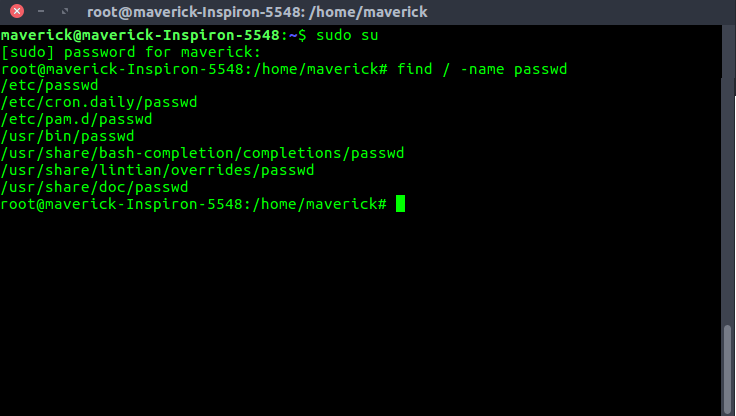
- Find the passwd file under root and one level down. (i.e root — level 1, and one sub-directory — level 2)
find / -maxdepth 2 -name passwd
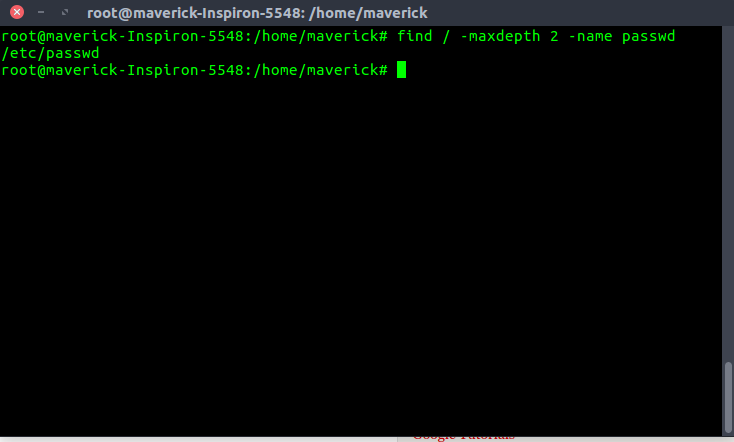
- Find the passwd file under root and two levels down. (i.e root — level 1, and two sub-directories — level 2 and 3 )
find / -maxdepth 3 -name passwd
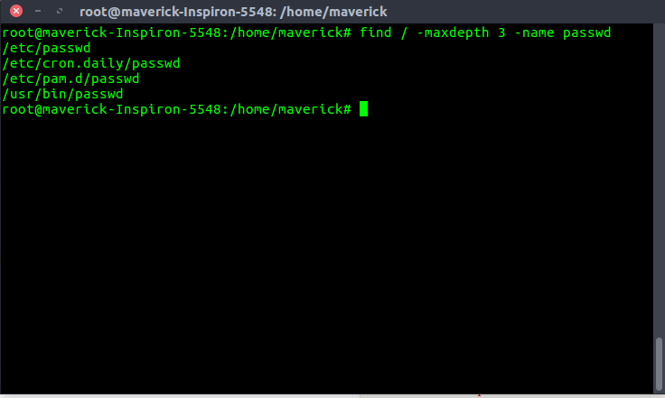
- Find the password file between sub-directory level 2 and 4.
find / -mindepth 3 -maxdepth 5 -name passwd
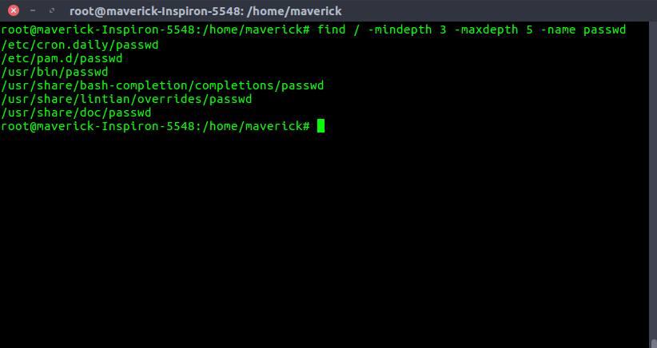
{kind=link}
There are two other ways to limit search a directory in linux :
- grep Grep searches the named input FILEs (or standard input if no files are named, or the file name – is given) for lines containing a match to the given PATTERN.By default, grep prints the matching lines.
- ack Ack is designed as a replacement for 99% of the uses of grep. Ack searches the named input FILEs (or standard input if no files are named, or the file name – is given) for lines containing a match to the given PATTERN . By default, ack prints the matching lines.
Examples of grep :
You can search the current directory with grep as follows: 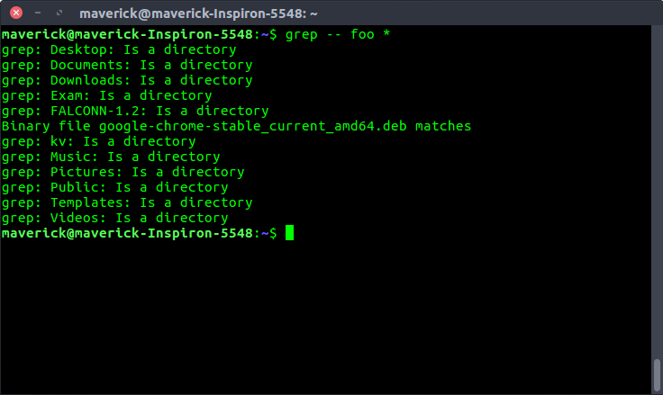 To check whether a directory exists or not 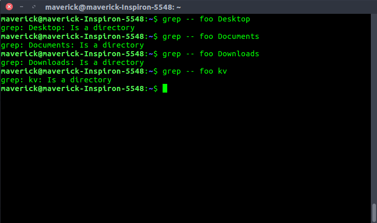 Find the directory under root directory. 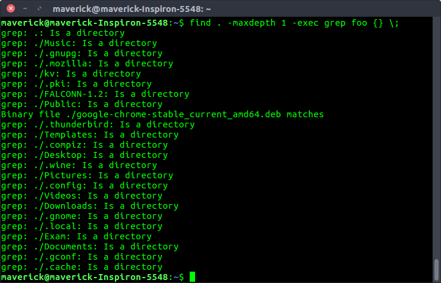 Find the directory under root and one levels down. 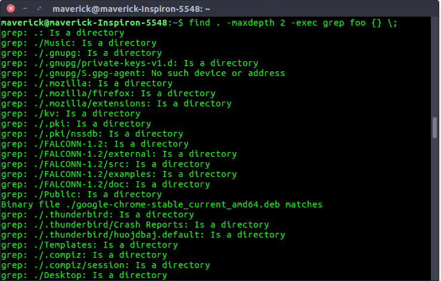 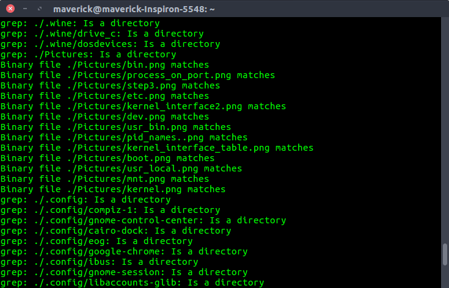 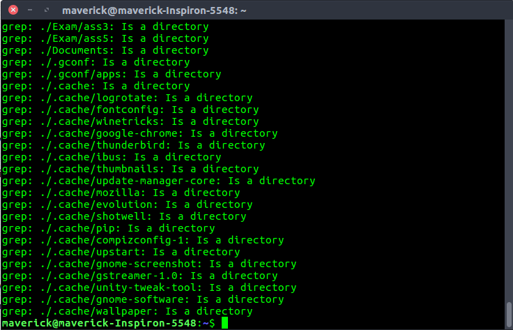
Ack can also list files that would be searched, without actually searching them, to let you take advantage of ack’s file-type filtering capabilities. Ack does not have a max-depth option
Examples of ack :
To check a particular directory under the root 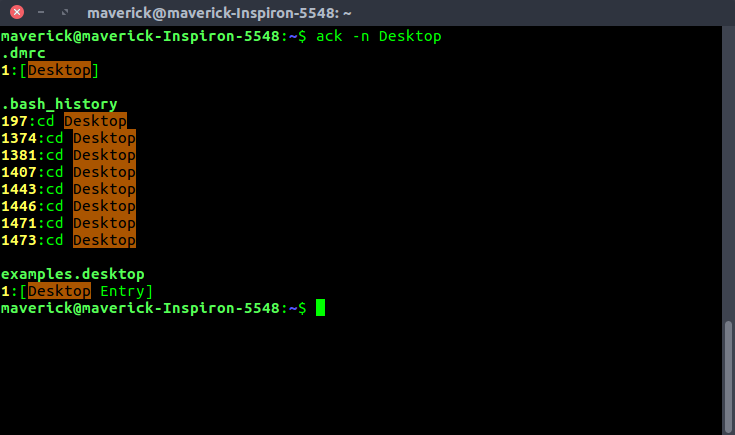 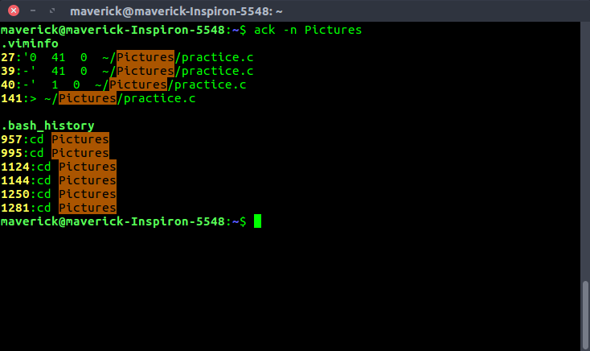 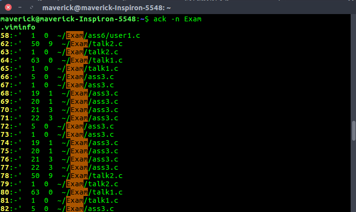 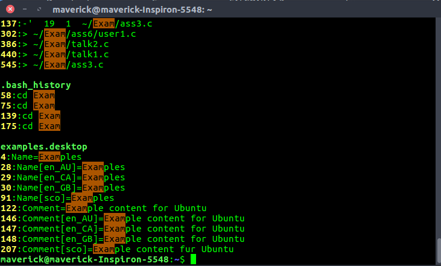
Reference : Linux manual page